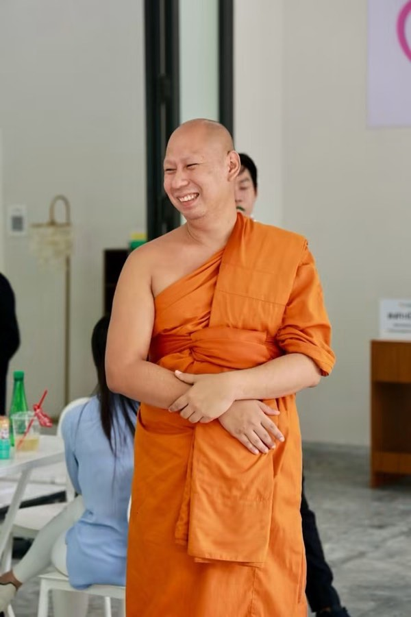

บ้านพึ่งวัดเกิดขึ้นและเดินต่อได้ ด้วยแรงสนับสนุนจากสามองค์กรและชุมชนทั้งภูเก็ต
เจ้าภาพโครงการ — ให้ที่ดินข้างวัดเป็นที่ตั้งอาคาร ดูแลบัญชีรับบริจาค และเป็นศูนย์รวมศรัทธาของชุมชนที่ร่วมสร้างบ้านหลังนี้
พันธมิตรด้านการแพทย์ — โรงพยาบาลหลักที่ผู้เข้าพักส่วนใหญ่เดินทางมารักษา อยู่ใกล้บ้านพึ่งวัดเพียงไม่กี่นาที .todo รอทีมวัดยืนยัน
ผู้สนับสนุนหลักของโครงการ .todo รอทีมวัดยืนยันก่อนเผยแพร่
ขอบคุณชุมชน ผู้ร่วมทอดผ้าป่า ช่างก่อสร้าง อาสาสมัคร และผู้บริจาคทุกท่าน ที่ทำให้อาคาร 100 เตียงหลังนี้เสร็จสมบูรณ์